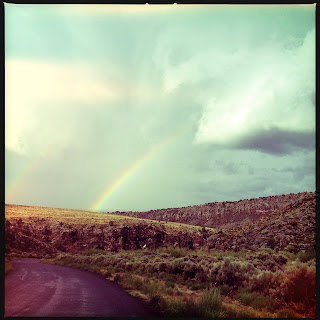

Recovered weblog entry
Into the Gap

It was a day long on beauty. So much to see, so much to feel, mists, time, trees, and skies. The experience was almost too much for me to take. Plus at my side, my sweetheart.
This captured and tied up the day with a bow.
Lens: Chunky
Film: DC